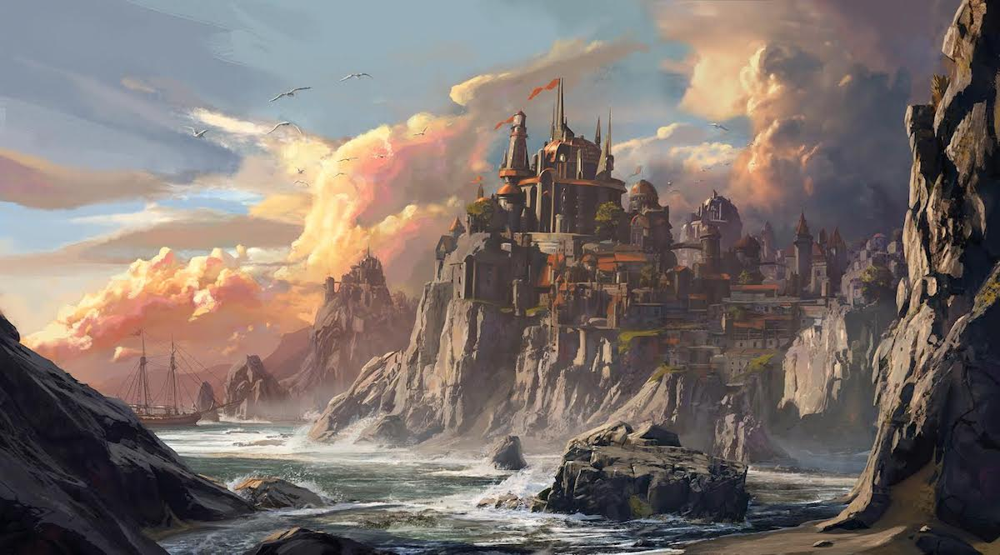
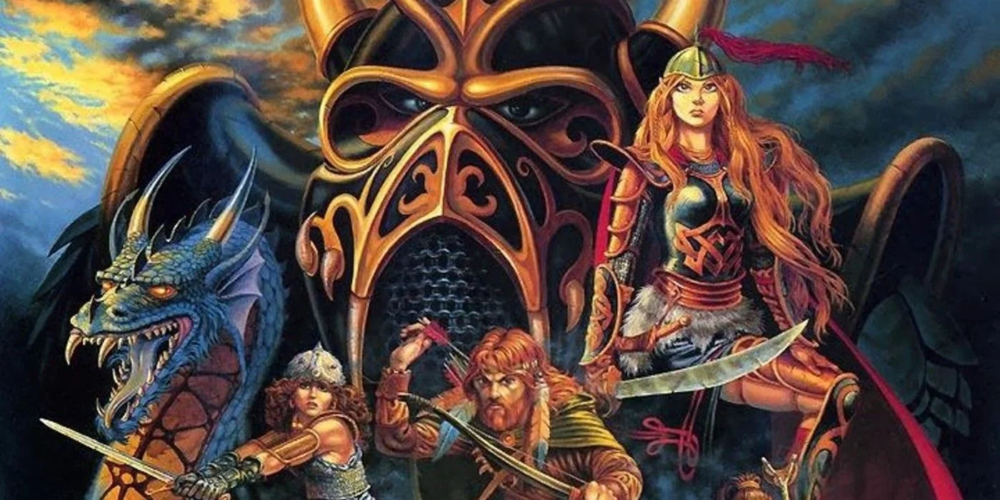
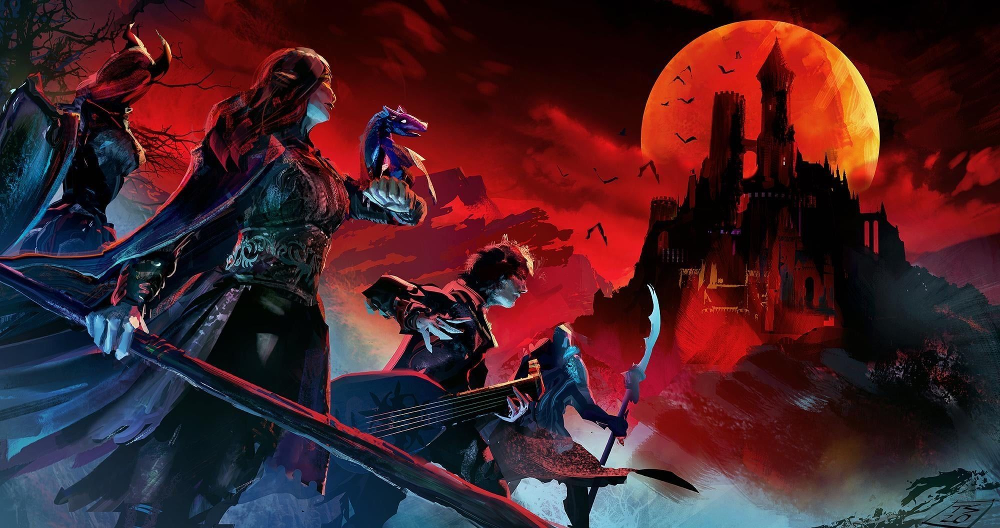

Mundos
Os 4 mundos clássicos de D&D
Forgotten Realms
Esse é o principal dos mundos clássicos de D&D. Forgotten Realms é uma parte do continente de Abeir-Toril. É um território extremamente vasto e conta com outros mundos inteiros dentro de si. Ainda, em Forgotten Realms, todos os acontecimentos são cinematográficos e épicos. É o cenário ideal para usar e abusar da criatividade e da fantasia. Cidades enormes, batalhas de guerra com pilhas de corpos, selvas com dinossauros e animais gigantes, ruínas, entre outros. Ou seja: é possível fazer uma campanha em Forgotten Realms durante anos e, ainda assim, não esgotar todas as possibilidades desse enorme e vasto cenário.
Dragonlance
Gosta de dragões? Então conhecer esse mundo clássico de D&D é quase uma obrigação. Juntamente com Forgotten Realms, Dragonlance é um dos mais populares universos compartilhados no jogo. Possui personagens únicos, uma extensa linha do tempo e uma detalhada topologia. Dragonlance faz parte de Krynn, um mundo tomado por dragões de todos os tamanhos, cores e jeitos. Ainda, para compreender como esse é um cenário valorizado pelo jogo, já existem mais de 190 crônicas que utilizam as configurações de Dragonlance servem como um material de suporte às campanhas de D&D desde os anos 90.
Mystara

Dentre as teorias que envolvem Mystara, a primeira já envolve o seu nome. Afinal, muitos acreditam que a sua origem vem de “Mystery Star”- ou seja: estrela misteriosa. Mystara surgiu como a união de vários projetos semi-independentes criados por diferentes escritores. Assim, o trabalho deles foi reunido, compilado e combinado para formar esse mundo de fantasia. Ainda, Mystara é um cenário que abriga diversos habitantes. Humanos de todas as raças, Elfos, Halflings, Orcs e dragões. Ainda, esse é um mundo dividido em três grandes partes: o continente de Brun, o continente de Skothar e o continente de Davania. Ainda abriga a ilha de Alphatia. Esses continentes se parecem com os da Terra de aproximadamente 150 milhões de anos atrás.
Raven Loft
Dos mundos clássicos de D&D, Ravenloft é um dos mais diferentes e exóticos. Ravenloft é, resumidamente, um pedaço de terra que está flutuando no Plano Etéreo. Chegar nesse cenário é uma tarefa árdua – mas sair é ainda mais difícil. Ravenloft é o mundo das trevas. Assim sendo, é um cenário atraído pela vilania. Dessa forma, se algum personagem realizar atos de extrema maldade, – mesmo que em outro cenário – existem chances de ele ser transportado para esse mundo. Ainda, em Ravenloft vivem os maiores vilões e as mais diabólicas criaturas dos mundos clássicos de D&D. Assim, vampiros, lobisomens, bruxas, fantasmas e espíritos poderão ser encontrados nesse cenário assustador.